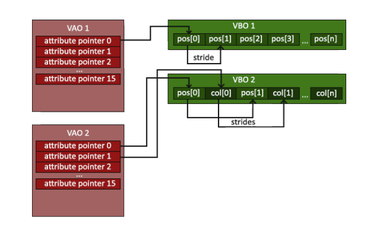

En esta página se explican los pasos a seguir para el renderizado de un triangulo.
2.1 Estructura de las Etapas
Las etapas marcadas en negrita son donde se pueden inyectar shaders para modificar el render.
- Vertex Input
- Vertex Shader
- Shape Assembly
- Geometry Shader
- Rasterization
- Fragment Shader
- Test and Blending
La GPU para renderizar necesita si o si un Vertex Shader y un Fragment Shader, el Geometry Shader es opcional.
2.2 Vertex Input
De momento se pasa un array de vértices. Cada vértice tiene 3 coordenadas x, y, z.
float vertices[] = {
-0.5f, -0.5f, 0.0f,
0.5f, -0.5f, 0.0f,
0.0f, 0.5f, 0.0f
};
Para renderizar, las coordenadas tienen que estar en el sistema NDC, que son puntos entre -1.0 y 1.0, todo lo que esté fuera no se ve.
VBO
La memoria se controla mediante el Vertex Buffer Objects (VBO) que guarda una gran cantidad de vértices en la GPU.
Asique hay que crear un objecto de openGL
unsigned int VBO;
glGenBuffers(1, &VBO);
VBO se guarda el id de donde se almacena en memoria de la GPU es buffer
Hay que especificar el tipo de buffer, en este caso es GL_ARRAY_BUFFER
glBindBuffer(GL_ARRAY_BUFFER, VBO);
Ahora hay que introducir la información al buffer
glBufferData(GL_ARRAY_BUFFER, sizeof(vertices), vertices, GL_STATIC_DRAW);
Los parámetros son:
- GL_ARRAY_BUFFER: el tipo de objeto (target).
- sizeof(vertices): el tamaño de los datos (lo que ocupa el vector de vertices).
- vertices: la información.
- GL_STATIC_DRAW: esto indica a la GPU como manejar la información
- GL_STREAM_DRAW: se setea 1 vez y se usa poco por la GPU
- GL_STATIC_DRAW: se setea 1 vez y se usa mucho
- GL_DYNAMIC_DRAW: la información cambia mucho y se usa mucho
2.3 Vertex Shader
Este indica a la GPU que hacer con los vértices que se pasan del paso anterior (que hacer con los vértices del VBO). Aquí un pequeño ejemplo que no los modifica solo los transmite al siguiente paso.
#version 330 core
layout (location = 0) in vec3 aPos;
void main() {
gl_Position = vec4(aPos.x, aPos.y, aPos.z, 1.0);
}
Copilar un shader
Primero hay que pasarlo a un const char*
const char* vertexShaderSource = "#version 330 core\n"
"layout (location = 0) in vec3 aPos;\n"
"void main()\n"
"{\n"
" gl_Position = vec4(aPos.x, aPos.y, aPos.z, 1.0);\n"
"}\0";
Y luego creamos un objeto de tipo GL_VERTEX_SHADER
GLuint vertexShader;
vertexShader = glCreateShader(GL_VERTEX_SHADER);
glShaderSource(vertexShader, 1, &vertexShaderSource, NULL);
glCompileShader(vertexShader);
El número 1 especifica cuantas strings le pasamos, en nuestro caso es solo vertexShaderSource.
Así se puede comprobar si esta bien compilado y si no lo esta se muestran los errores en consola
int success;
char infoLog[512];
glGetShaderiv(vertexShader, GL_COMPILE_STATUS, &success);
if (!success)
{
glGetShaderInfoLog(vertexShader, 512, NULL, infoLog);
std::cout << "ERROR::SHADER::VERTEX::COMPILATION_FAILED\n" <<
infoLog << std::endl;
}
2.4 Fragment Shader
Este shader decide cual es el color final de cada vértice. (En verdad queda el paso de opacidad y bending, pero el color opaco final se decide aquí)
Aquí un pequeño ejemplo que solo pone el color a un tono de naranja
#version 330 core
out vec4 FragColor;
void main() {
FragColor = vec4(1.0f, 0.5f, 0.2f, 1.0f);
}
Y para crearlo se sigue el mismo proceso
const char* fragShaderSource = "#version 330 core\n"
"out vec4 FragColor;\n"
"void main()\n"
"{\n"
"FragColor = vec4(1.0f, 0.5f, 0.2f, 1.0f);\n"
"}\0";
GLuint fragmentShader;
fragmentShader = glCreateShader(GL_FRAGMENT_SHADER);
glShaderSource(fragmentShader, 1, &fragShaderSource, NULL);
glCompileShader(fragmentShader);
Shader Program
Ahora hay que linkear todos los shaders a un programa.
GLuint shaderProgram;
shaderProgram = glCreateProgram();
glAttachShader(shaderProgram, vertexShader);
glAttachShader(shaderProgram, fragmentShader);
glLinkProgram(shaderProgram);
glGetProgramiv(shaderProgram, GL_LINK_STATUS, &success);
if (!success) {
glGetProgramInfoLog(shaderProgram, 512, NULL, infoLog);
}
glDeleteShader(vertexShader);
glDeleteShader(fragmentShader);
Para usar el shader simplemente se llama a esta función
glUseProgram(shaderProgram);
2.5 Link Vertex Attributes
Una vez creado el programa hay que decirle como interpretar la información.
| Vértice | Componente X | Componente Y | Componente Z |
| VERTEX 1 | Bytes 0 - 4 | Bytes 4 - 8 | Bytes 8 - 12 |
| VERTEX 2 | Bytes 12 - 16 | Bytes 16 - 20 | Bytes 20 - 24 |
| VERTEX 3 | Bytes 24 - 28 | Bytes 28 - 32 | Bytes 32 - 36 |
Configuración del Atributo (POSITION):
- Stride (Salto): 12 bytes
- Offset (Desplazamiento inicial): 0 bytes
Detalles del formato de datos
- Los datos de posición se almacenan como valores de punto flotante (float) de 32 bits (4 bytes).
- Cada posición está compuesta por 3 de esos valores (X, Y, Z).
- No hay espacio (ni otros valores) entre cada conjunto de 3 valores. Los valores están empaquetados de forma compacta (tightly packed) en el arreglo.
- El primer valor de los datos se encuentra exactamente al principio del búfer.
glVertexAttribPointer(0, 3, GL_FLOAT, GL_FALSE, 3 * sizeof(float), (void*)0); glEnableVertexAttribArray(0);
Parámetros:
- Indica cual atributo vamos a modificar, en el shader se especificó que sería location = 0
- El tamaño del vertex attribute, es decir 3 valores (x, y, z)
- Que tipo de data se almacena, (GL_FLOAT, 4bytes)
- Si queremos la data normalizada o no
- Aqui se indica el stride, que distancia hay entre vértices consecutivos (12 = 3 * 4Bytes)
- El offset de la data de posición (está al principio asique 0)
2.6 VAO
Para hacer el proceso de obtener los atributos de los vértices, lo mejor es utilizar un array

Flujo del VAO
Así se genera un VAO
GLuint VAO;
glGenVertexArrays(1, &VAO);
glBindVertexArray(VAO);
glBindBuffer(GL_ARRAY_BUFFER, VBO);
glBufferData(GL_ARRAY_BUFFER, sizeof(vertices), vertices, GL_STATIC_DRAW);
glBindBuffer(GL_ELEMENT_ARRAY_BUFFER, EBO);
glBufferData(GL_ELEMENT_ARRAY_BUFFER, sizeof(indices), indices,
GL_STATIC_DRAW);
glVertexAttribPointer(0, 3, GL_FLOAT, GL_FALSE, 3 * sizeof(float),
(void*)0);
glEnableVertexAttribArray(0);
2.7 EBO
El EBO sirve para evitar repetición de vértices y va por índices, es decir:
float vertices[] = {
-0.5f, -0.5f, 0.0f,
0.5f, -0.5f, 0.0f,
0.5f, 0.5f, 0.0f,
-0.5f, 0.5f, 0.0f,
};
GLuint indices[] = {
0, 1, 3,
1, 2, 3,
};
Luego se crea el buffer del EBO
GLuint EBO;
glGenBuffers(1, &EBO);
glBindBuffer(GL_ELEMENT_ARRAY_BUFFER, EBO);
glBufferData(GL_ELEMENT_ARRAY_BUFFER, sizeof(indices), indices, GL_STATIC_DRAW);
Luego al crear el VAO se añade el EBO
glBindBuffer(GL_ELEMENT_ARRAY_BUFFER, EBO);
glBufferData(GL_ELEMENT_ARRAY_BUFFER, sizeof(indices), indices, GL_STATIC_DRAW);
Y para renderizar seria así
glDrawElements(GL_TRIANGLES, 6, GL_UNSIGNED_INT, 0);
 1.16.1
1.16.1